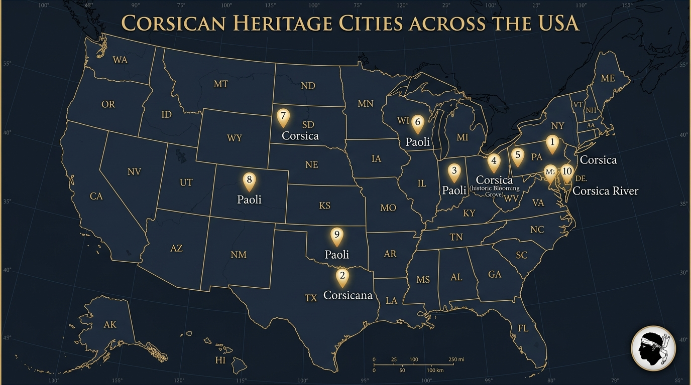

⚡ I. EXORDIUM : AN ADDRESS TO THE CONSCIENCE OF FREE MEN
When, in the tragic course of human centuries, a sovereign nation that stood as the elder sister and living beacon of the modern world finds its existence threatened with silent erasure upon its ancestral soil, a sacred duty of remembrance and decent respect to the opinions of mankind require that it lift its voice and bear witness before the world.
We do not come to implore the benevolence of a central state.
We do not come to plead for subsidies in the ministerial antechambers of an empire that has never understood us.
We come from the heights of our ancient mountains, in the name of generations living and yet unborn, to proclaim a truth that unequal treaties, state censorship, and complicit silence could never extinguish:
- Before the Liberty Bell rang in Philadelphia,
- Before Enlightenment thinkers finished their treatises in Parisian salons,
- Before the European continent broke its monarchical chains,
- A small land in the Western Mediterranean had already accomplished the earthly miracle of human freedom.
That miracle bears a name that imperial armies sought to erase and that free men carved into living rock: The Republic of Corsica.
📜 II. THE GIFT OF CORTE (1755) : THE FIRST BREATH OF MODERN DEMOCRACY
On November 18, 1755, in the mountain citadel of Corte, Pasquale Paoli — elected General of the Nation by the unanimous voice of village delegates — did not merely repel the mercantile ambitions of a predatory Genoese empire.
He bestowed upon all mankind the very first written democratic constitution of the modern era:
- Popular Sovereignty as the Sole Source of Legitimacy:
For the first time on this earth, a government declared that law derives neither from the divine right of an hereditary king, nor from brute military force, but from the freely consented will of citizens assembled in a General Council. - Women’s Suffrage: A Century and a Half Ahead of History:
One hundred and sixty-five years before the 19th Amendment granted voting rights to American women (1920), one hundred and eighty-nine years before France followed suit (1944), Corsican women heading households already cast their ballots in village assemblies to elect their magistrates and lawmakers. - The Sacred Separation of Powers:
Long before parchment was inscribed in Washington and Philadelphia, Corte’s executive was subject to annual legislative scrutiny, justice was shielded from political whim, and tuition-free public education opened the University of Corte to rural youth.
This was no idle salon theory. It was a living, republican, equitable, and peaceful order.
Across Europe and across the oceans, the era’s finest minds marveled. Jean-Jacques Rousseau wrote in The Social Contract with prophetic foresight:
« There is still one country in Europe capable of legislation: the island of Corsica. The valor and constancy with which this brave people has recovered and defended its freedom well deserve that some wise man teach them how to preserve it. I have a premonition that one day this small island will astonish Europe. »
Europe was not merely astonished. It was illuminated.
Yet it was not the royal courts of the Old World that carried the sacred flame of Corte: it was the pioneers, the patriots, and the builders of the young United States of America.
🌊 III. THE TRANSATLANTIC SPARK : HOW CORSICA AWAKENED AMERICA
In the spring of 1768, a young Scottish traveler, James Boswell, published a direct firsthand account of his journey to Corsica: An Account of Corsica. The book traversed the Atlantic like a wildfire. In the harbors of Boston, New York, and Philadelphia, American colonists — burdened by parliamentary taxation without representation — discovered with awe that a Mediterranean island was standing tall against the titans of Europe.
In Philadelphia, Benjamin Franklin championed the Corsican cause: publishing more than eighty articles in The Pennsylvania Gazette to celebrate Corsican heroism and prove to American patriots that liberty was achievable.
In Boston, the Sons of Liberty, led by Samuel Adams and John Hancock, toasted Pasquale Paoli beneath the branches of the Liberty Tree. John Hancock christened his finest transatlantic merchant ship The Paoli. Patriot leader Ebenezer Mackintosh named his newborn son Paschal Paoli Mackintosh. And during the famous Boston Tea Party of 1773, the commander leading the raid upon British ships, William Molineux, was known across the colonies solely by his revolutionary moniker: « Paoli Molineux ».
In New York, a nineteen-year-old student named Alexander Hamilton formed an elite revolutionary militia on the Columbia campus. He named it « The Corsicans », stitching onto their green coats the very motto of Corte: « Liberty or Death ».
⚔️ IV. THE BLOOD COMPACT (SEPTEMBER 1777) : THE BIRTH OF « REMEMBER PAOLI ! »
In September 1777, as the young American Republic fought for survival across Pennsylvania, the fate of both nations was indelibly bound in blood and glory.
On the freezing midnight of September 20–21, 1777, General Anthony Wayne’s American division camped near the General Paoli Tavern, an inn named in honor of the Corsican statesman. British light infantry struck in a brutal, silent night assault with cold steel bayonets. Fifty-three American soldiers were slaughtered in the dark.
In the wake of that massacre, George Washington and Anthony Wayne turned tragedy into an immortal rallying cry: the very first official battle cry in the history of the United States : « REMEMBER PAOLI ! ».
Weeks later at Germantown, and subsequently at the midnight bayonet storming of the fortress of Stony Point, American continentals charged forward shouting that Corsican name into the roar of cannon fire. The name of our General had become the sacred password of American liberty.
🗺️ V. LIVING GEOGRAPHY : AMERICA’S 10 HISTORIC CORSICAN LANDMARKS
While monarchical France, after Ponte Novu in May 1769, burned the archives of Corte and attempted to silence our native tongue, American pioneers permanently inscribed Corsica into the very bedrock of their continent:

| American Town / Territory | Location & Status | Historical Kinship & Heritage |
|---|---|---|
| Paoli, Pennsylvania | Chester County | Sacred memorial site of America’s first military battle cry « Remember Paoli ! » (1777) |
| Corsicana | Navarro County, Texas | Historic city founded in 1848 by Texas Declaration signer José Antonio Navarro in honor of Corsica |
| Corsica, Ohio | Morrow County | Founded in 1822 (today Blooming Grove). Official birthplace of 29th US President Warren G. Harding |
| Paoli, Indiana | Orange County (County Seat) | Historic county seat founded in 1816 by pioneers honoring General Paoli |
| Paoli, Wisconsin | Dane County | Historic Sugar River pioneer mill settlement founded in 1849 |
| Corsica, Pennsylvania | Jefferson County | Historic borough incorporated in 1860 in the heart of Jefferson County |
| Paoli, Colorado | Phillips County | Frontier railroad town incorporated in 1888 during westward expansion |
| Paoli, Oklahoma | Garvin County | Historic frontier trading and rail hub established in 1889 |
| Corsica, South Dakota | Douglas County | Great Plains agricultural settlement founded in 1905 |
| Corsica River | Queen Anne’s County, MD | Navigable colonial estuary flowing into Chesapeake Bay |
To America’s founding builders, Corsica was never a foreign land: it was the morning star of their own sovereignty.
⚖️ VI. THE HISTORIC VERDICT : WILLIAM PITT’S INDICTMENT AT WESTMINSTER
The destruction of Corsican independence in 1769 was never an act of law: it was an unjustifiable military invasion, purchased through the 1768 Treaty of Versailles between a bankrupt Genoese merchant oligarchy and the absolute French Crown.
On January 22, 1770, before the House of Lords in Westminster, former British Prime Minister William Pitt the Elder (Lord Chatham) delivered a verdict that still echoes across centuries:
« The destruction of the freedom of a sovereign people by the brute force of foreign armies is an assault against the freedom of all mankind ! »
Two hundred and fifty years later, that historical injustice remains unresolved: how can a state that claims to champion universal human rights deny the modern world’s earliest constitutional republic the basic right to survive upon its own soil?
🔱 VII. SOVEREIGN RESTITUTION : CORSICA’S TRIDENT OF LIFE (WATER, ENERGY, SEA)
To those who claim that an island of liberty is destined for dependence or perpetual economic subsidy, the physical reality of our land demonstrates the exact opposite: Corsica commands within its mountains, rivers, and coastal plateau all the natural vitality needed to nourish, power, and liberate its people.
Corsica’s resurgence rests upon the sovereign reclaim and public governance of its Vital Trident:
- ⚡ Sovereign Energy (194 to 199 MW Hydroelectric Power under State Concession) :
Our four major mountain reservoirs (Calacuccia, Tolla, Sampolo, Rizzanese) total approximately 194 to 199 MW of installed hydroelectric capacity. This clean, renewable, and sovereign energy is currently operated under state concessions. Integrated with pumped-storage hydro (STEP) and solar expansion outlined in the Multi-Year Energy Plan (PPE), Corsica can phase out imported heavy fuel oil and achieve clean energy self-sufficiency. - 💧 The Mediterranean Water Fortress (Citizen Proposal of 175 Million m³) :
While the public network of the Corsican Hydraulic Equipment Office (OEHC) already stores nearly 46 million m³ across its reservoirs and dams, annual rainfall yields 8 to 10 billion m³ across the island’s watersheds. The engineering model championed by L’OCHJU demonstrates that non-invasive alluvial river capture (Golo, Tavignano, Gravona) can mobilize up to 60 million m³ of additional fresh water without massive concrete dam construction, achieving an overall potential of 175 million m³ to safeguard agricultural irrigation and end summer drinking water shortages forever. - 🌊 The Sanctuary of the Sea (The 12-Mile Shield & European Rule of Law) :
As definitively ruled by the Toulouse Administrative Court of Appeal on March 28, 2024 under Article 17 of the Common Fisheries Policy (CFP), pelagic fishing quotas can no longer be monopolized by industrial mainland vessels. Enforcing the 12-mile coastal sanctuary and reallocating historical quotas protects our 180 artisanal fishermen and delivers fresh fish directly to local families at fair, citizen-level prices.
This natural heritage is not a financial commodity: it is the inalienable commons of the Corsican People.
🌐 VIII. SOLEMN APPEAL TO FREE NATIONS & THE UNITED STATES CONGRESS
Today, facing real-estate speculation that dispossesses our youth and central state denial, Corsica stands tall in the dignity of its historical covenant.
It addresses the American People, their elected representatives, and the community of free nations:
📜 THE CORSICAN APPEAL TO FREE PEOPLES & THE US CONGRESS
(Corte — Washington, 2026)
“Citizens of the Free World, Heirs of 1776,
Two hundred and seventy years ago, our small Mediterranean republic lit the sacred fire of constitutional democracy that guided your Founding Fathers through the storm.
When your ancestors rose against imperial oppression, they looked to Pasquale Paoli. They named their sons after him in Boston. They wore his motto ‘Liberty or Death’ in New York. And on the battlefields of Pennsylvania, they consecrated your independence with their very first battle cry : ‘REMEMBER PAOLI !’.
Today, the very cradle of your modern freedom is threatened with demographic and territorial erasure upon its ancestral soil.
We do not ask for charity. We demand justice and truth before humanity :
- Formal recognition of the Corsican People as an Indigenous and Original People under the UN Declaration on the Rights of Indigenous Peoples (UNDRIP 2007), guaranteeing inalienable sovereignty over its ancestral land, culture, and natural resources against speculative displacement.
- The immediate re-inscription of Corsica on the UN Special Committee on Decolonization list (C-24) under Resolution 1514 (XV), following the precedent of Resolution 67/265.
- International diplomatic support for the Corsican 5-Year Resident Status, protecting our ancestral soil against speculative eviction in accordance with European and constitutional territorial safeguards.
- Public governance of our 194–199 MW hydroelectric commons, securing full clean energy autonomy and regional grid modernization.
- Public stewardship of our water commons (with a planned 175M m³ multi-source capacity), ensuring drinking water access and food sovereignty for future generations.
- The lawful restitution of our maritime quotas under EU CFP Article 17 and coastal zone defense, securing fair livelihoods for our artisanal fishermen.
‘REMEMBER PAOLI — DEFEND THE CRADLE OF YOUR OWN FREEDOM.’ ”*
✊ IX. EPILOGUE : THE ETERNAL OATH OF CORTE (1755–2026)
[!IMPORTANT] The Golden Thread of Human Brotherhood
From Corte in 1755 to Boston in 1773, from the heroic clearing of Paoli Tavern in 1777 to the present day, Corsican liberty was never an accident of history: it is the living bedrock of modern democracy.
- To the Youth and People of Corsica : Never look down again. You are the descendants of the first men and women who dared to write human freedom into law. You hold in your hands your water, your power, your sea, and your mountains. This land is yours.
- To the People of the United States and Friends of Freedom : Remember where your first republican breath came from. When oppression threatens the land of Paoli, stand beside your elder brothers and sisters.
Liberty never dies where people refuse to forget.
— The Citizen Editorial Board of L'OCHJU